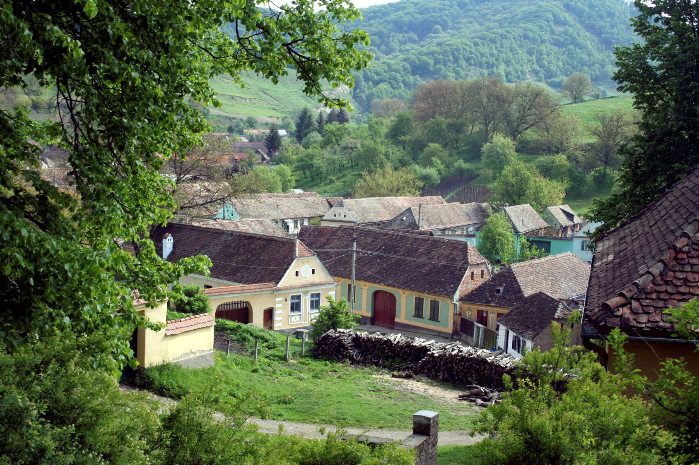
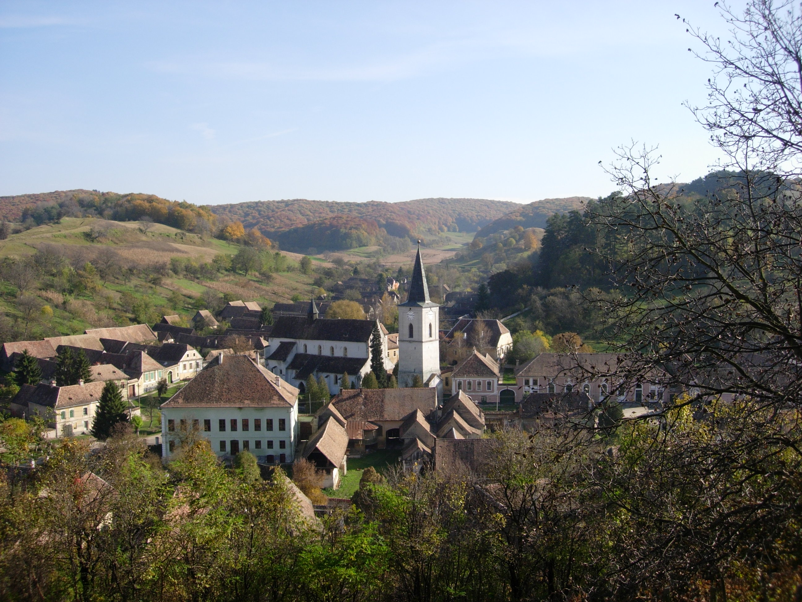

Origins of the trust

The Mihai Eminescu Trust was formed during Ceaușescu’s dictatorship, to help persecuted dissident academics by smuggling in books and journals so that they could keep abreast with the civilisation they had once shared. Our clandestine contacts took us to strange places. In 1987 I visited the lonely mountain hut of Constantin Noica, a much-revered sage who told me the ancient villages around him were facing the imminent threat of “systematisation”—obliteration by bulldozing—to make room for factories and concrete apartment blocks. In response, the Trust formed the English-speaking wing of an international movement to save the Saxon villages. Would we have succeeded without the collapse of communism? We will never know. But the Berlin Wall fell, Ceaușescu was killed and overnight the tables were turned. Until then, our movements had been restricted and kept under 24-hour surveillance. With Ceaușescu’s death, we could at last visit the villages without the constant attentions of the Securitate.

In July 1993, with Mark Almond and Christine Stone, I set off from Bucharest north to Brașov, quite unprepared for what we were to find in Transylvania. Driving through an area the size of Wales, we visited but a fraction of the 250 Saxon villages and seven towns of the Siebenburgen. Here were fortified, frescoed churches, cobbled streetscapes, stuccoed and gabled houses, fields, woods and valleys filled with wildflowers, rare birds and butterflies. Cows and buffalo made their daily excursions into the hills, each returning un-erringly to its own courtyard at dusk for milking. Houses were boarded up, churches all but deserted. An elderly Saxon would stop us, weeping over the exodus that had so recently taken place—telling us of their families’ flight and abandonment of their heritage. For, following the events of 1989, Germany’s Foreign Minister Hans-Dietrich Genscher had invited Eastern Europe’s German-speaking populations to return to the Fatherland, and only a few families remained. A spell had been cast on us. We had discovered a corner of Europe with all its ancient richness and beauty intact. Laid out before us was not just a panorama of evocative architecture and magnificent churches, nor was it reducible to the unique harmony between man and nature. Its secret was that it was the outcome of successful settlement, the visible result of routines maintained over centuries. The introduction of the Saxon culture to Hungarian Transylvania dates back to 1153, when King Geza recruited mercenaries from the Mosel and the Rhineland to guard his kingdom’s borders. In exchange he gave them fertile land, their own legal system and permanent rights of settlement and autonomy. Over the following eight centuries, the Saxons built their villages, kept their seclusion, intermarried and retained their own laws, religion, educational system and their arts and crafts. What now, we asked ourselves, would become of this fallen paradise? There must surely be an alternative to decay or cheap modernisation. At first tentatively, later with a growing confidence encouraged by the commitment of long-term support by the Packard Humanities Institute—and always hand in hand with the villagers—we began a campaign to revive the local economy through the renewal of its heritage. We saved houses and churches from the dilapidation that had overtaken them since the flight of their Saxon inhabitants; in parallel we turned our attention to the villagers’ means of earning a living. We called this our Whole Village Project - an idea which we developed with the Horizon Foundation.

To give the villagers’ a trade, and to instill pride in their surroundings, we offered training in traditional techniques and the use of authentic materials. Most of them now were Romanians or gypsies, but a few dynamic Saxons remained, one of whom, Caroline Fernolend, became our national director and an inspiration for our hopes and ambitions. To date we have completed over 1,602 restoration projects, large and small, in 29 villages and towns. To add professionalism to the task, we brought craftsmen from Germany and Britain to supervise (and themselves imbibe) the ways of villagers steeped in a centuries-old congruity of man, nature and architecture. We brought back to life once-thriving crafts: locksmithery and iron forging, masonry, joinery and metalworking, brick and tile making, painting, stuccowork and carving, linen making and basket weaving. What we were seeking was a reconciliation of old and new. Without care of their heritage, the villages would die. But they would also die if they became nothing more than empty relics, to be gazed at by curious tourists. In these villages beauty and prosperity had gone hand in hand for centuries. To divorce them would be to kill them both. With our help, the enthusiasm of the villagers to become self-sufficient was stirred. Jessica Douglas-Home (Founder of The Mihai Eminescu Trust)